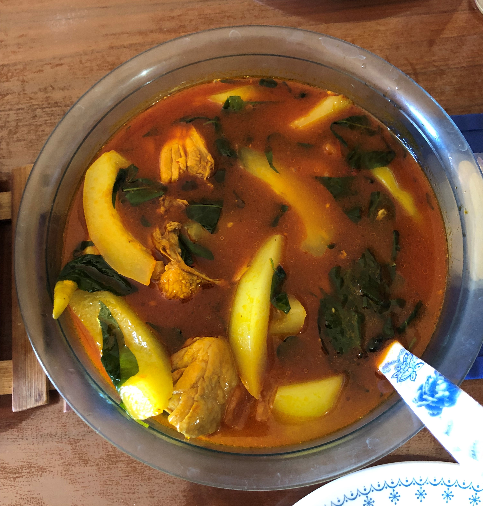

Ilonggo style Chicken Tinola

Description
This is an Ilonggo style tinola. Tinolang manok is my number one comfort food. The simple taste of it makes me think of home and my grandparents's farm. It is best to eat during rainy or cold days when you want to feel warm and relaxed.
INGREDIENTS
- 1kg or 1 whole chicken (native prefferably), chopped
- 1 green papaya, sliced
- 1-2 stalks lemongrass, knotted
- 2 green chili
- 1/2 cup atsuete (annato) seeds, soaked in 1 cup warm water
- 1 medium sized onion, sliced
- 4 cloves garlic, minced
- 1-2 tomato, sliced
- 1 pc knorr chicken cubes
- 1 medium size ginger, sliced
- 1 liter water
- 1 tie chilli pepper leaves
INSTRUCTIONS
- Heat oil in a cooking pot.
- Saute garlic, onion, chicken cubes, and ginger.
- Add tomato when garlic turns golden brown
- Add the chicken and cook until the color turns into light brown.
- Add dissolved atsuete, filter the seeds.
- Add lemongrass.
- Pour 1 liter water and bring to a boil.
- Add papaya and simmer for 20 mins or until papaya turns white.
- Add green pepper, simmer for 5 mins.
- Add salt and pepper to taste.
- Turn off the fire and remove the lemongrass.
- Add chilli pepper leaves and cover the pot for 2 mins.
- Serve hot and Enjoy!